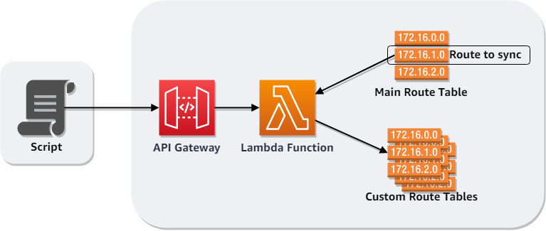
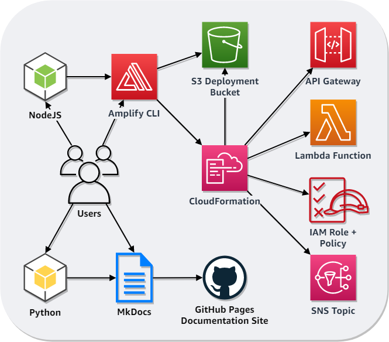

AWS Sync Routes¶
Synchronizes the specified route from the main/default route table to all custom route tables in the VPC.
Architecture¶
Architecture diagram¶

Infrastructure as code diagram¶

Prerequisites¶
For Windows users¶
Getting Started¶
- From the project root, run
npm installto install the NodeJS dependencies listed in./package.json. -
Then run
amplify env add, which will:- Map your AWS CLI profile to a new AWS Amplify environment
- NOTE: The default AWS region specified for your AWS CLI profile will be used, such as
us-east-1. Update the value (temporarily or otherwise) if you want the resources deployed elsewhere. - Deploy the root CloudFormation stack, which includes the following default resources for an AWS Amplify CLI managed project:
- Create:
./amplify/team-provider-info.json:- Specifies the names and ARNs of the resources in the root stack for your environment.
- IMPORTANT: Do not submit pull requests with your
./amplify/team-provider-info.jsonfile. Again, it contains information about your environment's resources. - This file should be committed in your private repo and was intentionally excluded from
./.gitignore. - If you updated the default region for your AWS CLI profile and want to change it back, you can do so once this file exists because all of the other resources will be deployed to the region specified in this file.
./amplify/backend/amplify-meta.json:- Compiled from
./amplify/backend/backend-config.jsonand./amplify/team-provider-info.json. - Specifies:
- The managed backend categories
- Their dependencies
- Deployment information
- Compiled from
./amplify/#current-cloud-backend/: Directory containing the compiled version of the environment../src/aws-exports.js: Covered in the next step.
- The example below specifies an environment name of
dev, an editor ofNone, and thedefaultAWS CLI profile. Adjust these for your use case.
$ amplify env add Note: It is recommended to run this command from the root of your app directory ? Enter a name for the environment dev ? Choose your default editor: Sublime Text Visual Studio Code Atom Editor IDEA 14 CE Vim (via Terminal, Mac OS only) Emacs (via Terminal, Mac OS only) ❯ None Using default provider awscloudformation For more information on AWS Profiles, see: https://docs.aws.amazon.com/cli/latest/userguide/cli-multiple-profiles.html ? Do you want to use an AWS profile? (Y/n) ? Please choose the profile you want to use (Use arrow keys) ❯ default ⠼ Initializing project in the cloud...
-
Review the API request throttling parameters:
burstLimit&rateLimit, in./amplify/backend/api/awssyncroutes/parameters.jsonand update if necessary. -
Run
amplify pushto deploy the rest of the resources.
$ amplify push Current Environment: dev | Category | Resource name | Operation | Provider plugin | | -------- | ------------- | --------- | ----------------- | | Function | awssyncroutes | Create | awscloudformation | | Api | awssyncroutes | Create | awscloudformation | ? Are you sure you want to continue? (Y/n)
* This will create:
* `./src/aws-exports.js`: One place where you can find the root URL of the new API Gateway.
* `./amplify/backend/awscloudformation/nested-cloudformation-stack.yml`: Nested CloudFormation stack specification.
* Also, the `S3Bucket` will be automatically populated in `./amplify/backend/function/awssyncroutes/awssyncroutes-cloudformation-template.json`.
* **IMPORTANT**: Do not submit pull requests with ***your*** S3 deployment bucket.
-
Once complete, retrieve the API key.
- One way to do this:
aws apigateway get-api-keys: Copy theidvalue for the next command.aws apigateway get-api-key --include-value --api-key <id>: Copy thevaluevalue.
- One way to do this:
-
Now, you are ready to test the API endpoint.
- One way to do this:
curl --data '{"destination-cidr-block":"<destination cidr block>", "dry-run": true}' --header "X-API-Key: <api key>" --header "Content-Type: application/json" --request PATCH https://<api gateway id>.execute-api.<region>.amazonaws.com/<stage name>/vpcs/<vpc id>/route-tables/<route table id>
Request requirements¶
Requests will only be accepted if the specified destination CIDR block:
- Is not the default local route.
- Is not a propagated route.
- Has an ENI target.
- Is in an
activestate in the main route table.
Usage¶
There is only one API endpoint with two path parameters: /vpcs/<vpc id>/route-tables/<route table id> with a HTTP PATCH request method.
NOTE: This implementation does not follow all of the RFC5789 specifications for a HTTP PATCH method- it does not use a PATCH document and it is idempotent.
| Path parameter | Required | Description | Example 1 | Example 2 |
|---|---|---|---|---|
<vpc id> |
true |
ID of the VPC. | vpc-01234567 |
vpc-0123456789abcdef0 |
<route table id> |
true |
ID of the VPC's main route table. | rtb-01234567 |
rtb-0123456789abcdef0 |
The request body schema has one required property: destination-cidr-block, and one optional property: dry-run.
| Property name | Required | Description | Example 1 | Example 2 |
|---|---|---|---|---|
destination-cidr-block |
true |
The IPv4 destination CIDR block for the route. | 192.168.0.0/24 |
172.30.0.0/16 |
dry-run |
false |
Checks whether you have the required permissions for the action, without actually making the request, and provides an error response. If you have the required permissions, the error response is DryRunOperation; otherwise, it is UnauthorizedOperation. |
true |
false |
Example¶
curl --data '{"destination-cidr-block":"<destination cidr block>", "dry-run": true}' --header "X-API-Key: <api key>" --header "Content-Type: application/json" --request PATCH https://<api gateway id>.execute-api.<region>.amazonaws.com/<stage name>/vpcs/<vpc id>/route-tables/<route table id>
Project tree¶
. ├── amplify/ │ ├── #current-cloud-backend/ │ ├── .config/ │ │ ├── local-aws-info.json │ │ ├── local-env-info.json │ │ └── project-config.json │ ├── backend/ │ │ ├── api/ │ │ │ └── awssyncroutes/ │ │ │ ├── awssyncroutes-cloudformation-template.json │ │ │ └── parameters.json │ │ ├── awscloudformation/ │ │ │ └── nested-cloudformation-stack.yml │ │ ├── function/ │ │ │ └── awssyncroutes/ │ │ │ ├── dist/ │ │ │ ├── src/ │ │ │ │ ├── node_modules/ │ │ │ │ ├── app.js │ │ │ │ ├── index.js │ │ │ │ ├── package-lock.json │ │ │ │ └── package.json │ │ │ ├── awssyncroutes-cloudformation-template.json │ │ │ └── parameters.json │ │ ├── amplify-meta.json │ │ └── backend-config.json │ └── team-provider-info.json ├── docs/ │ ├── about/ │ │ ├── contributing.md -> ../../CONTRIBUTING.md │ │ └── license.md -> ../../LICENSE │ ├── adr/ │ │ ├── 0001-record-architecture-decisions.md │ │ ├── 0002-aws-amplify-cli-toolchain.md │ │ ├── 0003-http-patch-method.md │ │ ├── 0004-api-key.md │ │ └── 0005-uri.md │ ├── Architecture.png -> ../Architecture.png │ ├── InfrastructureAsCode.png -> ../InfrastructureAsCode.png │ └── index.md -> ../README.md ├── src/ │ └── aws-exports.js ├── .adr-dir ├── .editorconfig ├── .eslintrc.js ├── .gitignore ├── Architecture.png ├── InfrastructureAsCode.png └── README.md
The project tree was generated with the following command:
tree -aFL 6 --dirsfirst --noreport -I ".git|*-latest-build.zip"
License¶
This library is licensed under the Apache 2.0 License.